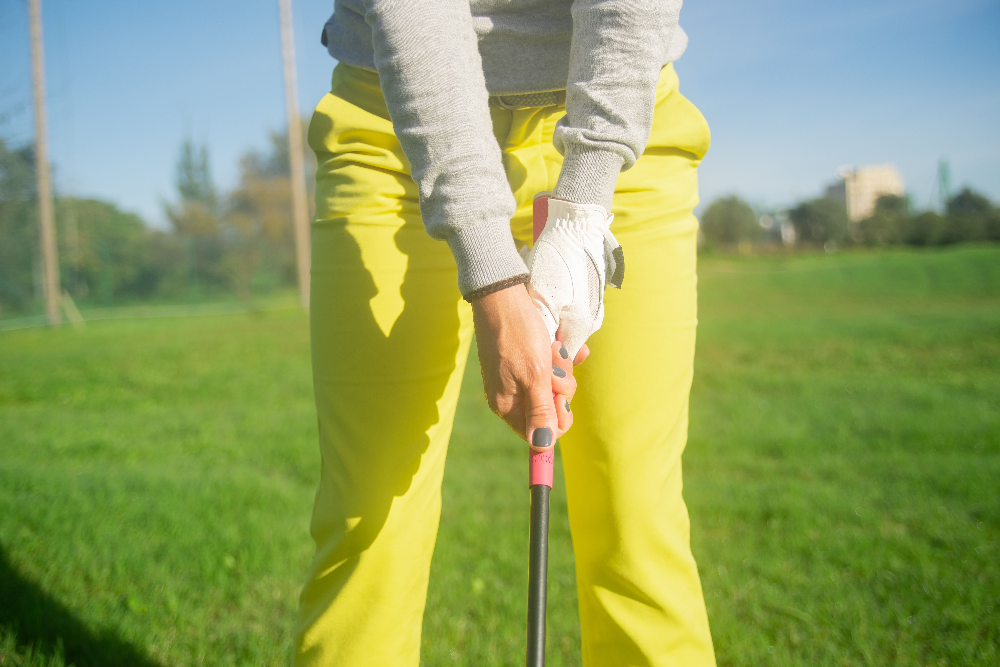
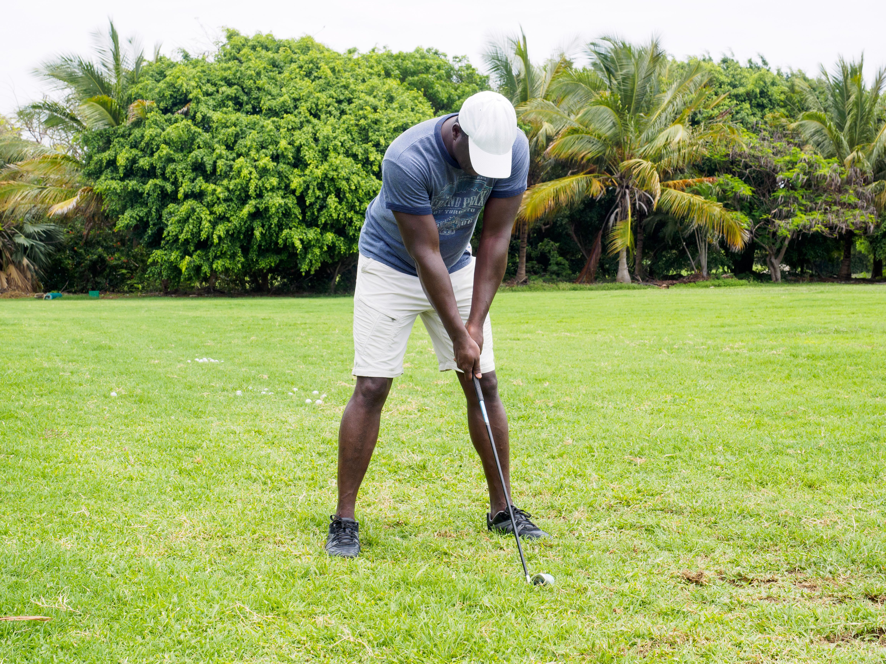
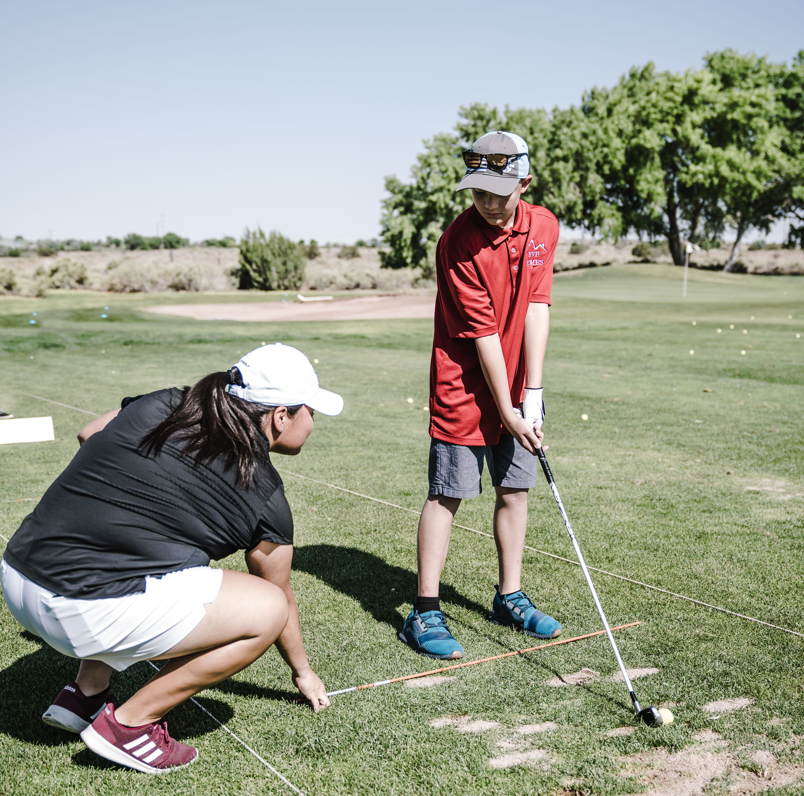
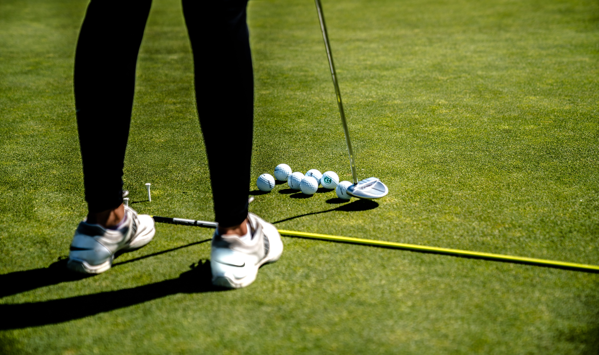
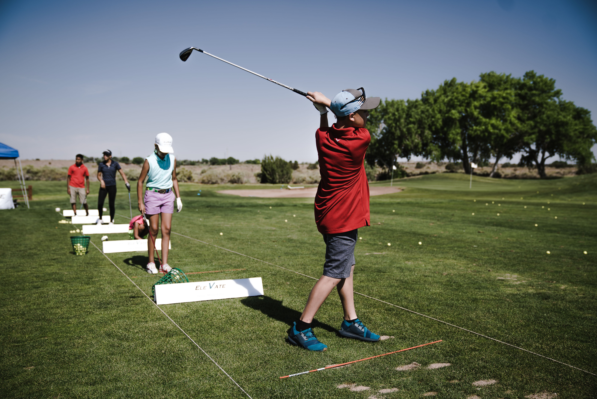

1. Learn the Proper Grip
Your grip is one of the most important parts of your golf swing. Hold the club firmly enough to stay in control, but avoid squeezing it too tightly. A relaxed grip can help you swing more naturally.

2. Set Up Your Stance
A balanced stance gives you a strong foundatipn for your swing. keep your feet about shoulder-width apart and slightly bend your knees. Your weight should feel balanced between both feet.

3. Focus on Alignment
Before hitting the ball. make sure your feet, hips, and shoulders are aimed toward your target. Good alignment makes it easier to send the golf ball in the direction you want.

4. Practice your Short Game
Putting and chipping are an important part of lowering your score. Spend time practicing short shots around the green instead of only practicing full swings.

5. Build a Practice Routine
Consistent practice is one of the best ways to improve at golf. Try dividing your practice time between full swings, short game, putting, and different situations you may experience on the course.
